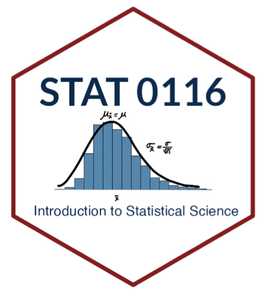

These are my notes from “Introduction to Statistical Science” at Middlebury College in Spring 2023.
We roughly follow Introduction to Modern Statistics by Mine Çetinkaya-Rundel and Johanna Hardin. This is an open-source and free textbook available through OpenIntro.
This course utilizes R and RStudio for computation. Free download available here.
| Topic | Notes | Homework | Other Resources |
|---|---|---|---|
| Ch 1 - Hello Data | |||
| Lab - Intro to Data | |||
| Ch 2 - Study Design | |||
| Ch 4 - Categorical Data | |||
| Lab - Categorical Data in R | |||
| Ch 5 - Numeric Data | |||
| Supp - Probability (Part 1) | |||
| Lab - Numeric Data in R | |||
| joining | |||
| Supp - Probability (Part 2) | |||
| Ch 13 - Normal Variables | |||
| Lab - Normal Variables | |||
| Ch 13 - Central Limit Theorem | |||
| Ch 11 - Hypothesis Testing | |||
| Lab - Hypothesis Testing Activity | |||
| Ch 16 - Inference for One Proportion Ch 19 - Inference for One Mean |
|||
| Ch 13 - Confidence Intervals | |||
| Lab - Inference for One Proportion or One Mean in R | |||
| Ch 17 - Inference for Comparing Two Proportions | |||
| Ch 18 - Inference for Two Way Tables | |||
| Lab - Inference for Proportions in R | |||
| Ch 20 - Inference for Two Independent Means | |||
| Ch 21 - Inference for Two Paired Means | |||
| Lab - Inference for Two Means in R | |||
| Errors | |||
| Ch 7 - Linear Regression | |||
| Lab - Linear Regression in R | |||
| Ch 24 - Inference for Linear Regression |